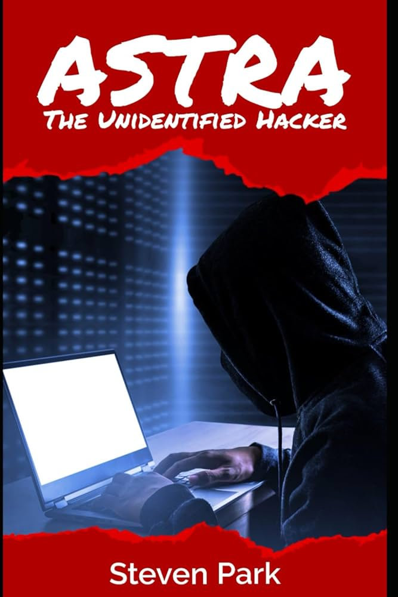

A Security Curriculum
Table of Contents
Curriculum
Here is everything I found that fits together to achieve the goal of being able to follow the people who keep winning DEFCON and other CTFs so we can get good enough to eventually be paid to do this being a junior consultant and working our way up to freelancer in the 'security industry' which today can be even more sketchy than old school blackhat communities.
pwn.college
We want to take these 4 courses from ASU. They even offer an apprenticeship.
- CSE 365 Intro to Cybersecurity
- CSE 466 System Security
- CSE 539 Applied Crypto
- CSE 598 Advanced Software Exploitation
These resources match with the pwn.college courses if you want depth:
- CMU CS:APP3e book and lectures
- Modern C (C23)
- CryptoJedi Hacking in C
- CryptoJedi Attacking Networks
- PortSwigger Web Security Labs
- Brown Topics in Software Security with open research problems
Securing an entire company
You can buy CISO certification after 5-7 years work experience in some kind of management role then your career becomes wearing a suit and rolex everyday while sitting on the executive board. The places I've worked at they typically are given no budget and have an almost ceremonial function so I have no idea what they do all day except draw a large salary.
- MIT's 6.566 covers how to secure the entire organization
- Make it not economically viable for an adversary to bother
- Supply chain security of software
- WebAuthn or Okta to defeat phishing
- OSquery-like agent to check everybody's software like browser extensions
- Centralized logging to detect intrusions like OSquery agent being killed
- Managing untrusted storage servers
Cryptography
This is 'real' crypto and not the bozo world of web3 schemes but we will learn enough should you want to get into ridiculous web3 CTFs held on yachts in the Emirates to capture wallets instead of flags. That is if the other participants don't forge submission sigs.
- TU/e Cryptanalysis and Post Quantum Crypto 2023/22
- Recorded lectures/notes/assignments all open
- Insight into crypto secure against quantum computers
- Crypto Protocols in-depth plus Tanja YouTube lectures
- Engineering Crypto Software how to optimize ChaCha20, Poly1305 and ECDH/Curve25519
If you've ever been interested in breaking crypto this is your chance to learn. To understand this we need basic knowledge of sets, groups, vector spaces, and number theory which is exactly what is taught in Part 1A of the math tripos section. Tanja also has a new book covering the same topics.
Typical industry options
You can always create your own security role from inside a company you already work for.
Freelance researcher
Selling exploits for a lot of money. Some of these bounties are hilarious like only 100k for code signing bypass, it must be easier than it looks if it pays lower than a WordPress exploit. Many of these seem to be located in the Emirates now like ZeroZenX. The way this works is they pay you over time not all at once that way there's an incentive for you to not turn around and resell to a competitor.
Instead of freelancing for bounties the researchers working for dfsec receive a bonus for any major bug found on top of whatever large salary they're already being paid.
SOC threat analyst
SOC means Security Operations Center. This is a wagie working shifts (usually remotely) for a 24/7 enterprise tier threat response contractor who is paid to analyze system logs (almost always Windows OS logs) and analyze network traffic to spot problems. You primarily extract and filter data with OSquery and do 'threat intelligence'. I imagine these security contractors exist to satisfy insurance compliance or lawsuit protection from any breaches/leaked data.
If you're interested then LetsDefend has some free challenges analyzing logs to try and spot threats.
Security consultant
Someone charging 7-20k+ per week for an application security assessment. This kind of person can do the 'full stack' of security review from source code review/dependencies to how developers handle the repository keys. The typical engagement is 1-3 consultants for 2 weeks where there is juniors competent in running audits and the principal consultant oversees them to present reports to the client justifying the money spent. Large contracts they will outsource reverse engineers and all kinds of other specialists charging insanely high hourly rates. The major outfits are Leviathan security, IOactive, Bishop Fox, NCC group, or search for security consultant jobs. Leviathan is probably the biggest in the US because I believe you have to contract either them and/or Bishop Fox in order to use any kind of Google auth in your software. They even sell a 'virtual CISO' service.
If you live in France then get in with Synacktiv they place first or second in every global competition or REverse Tactics. If you live in Saudi Arabia join Haboob SA they also win global competition prizes. If you live in Korea join KAIST or theori. If you live in Vietnam join Viettel. If you live in Taiwan join DEVCORE. If you're in Germany join the redrocket club. See who is winning pwn2own or other security competitions in your country and weasel your way inside.
The security business
If you live in the UK look at the openings page for PortSwigger the company that sells Burpsuite the most popular web penetration toolkit. There's an offer for Master of the Swigverse where they teach you from the ground up the entire business of selling a security product. Full mentorship in competition analysis, customer engagement to improve the product, hiring code wagies, public relations, general management of teams and finance, this is a pretty great offer.
How bad it all is
Watching the CS19 lecture on security.
Npm breaches are brought up, the JavaScript package manager. If you've ever installed some Node.js software to run it locally you will have noticed there are enormous amounts of dependencies being automatically installed. If you missed the attack description the stream dependency was attacked to specifically target some Bitcoin wallet software in hopes that the wallet developers themselves would include it in their builds and they did. All the attacker had to do was find some unmaintained but popular dependency and take over the project. Many browser plugins have had this happen too, either sold to ad-tech or malware writers.
@9:00 we're getting into nightmare tier where VSCode the IDE most developers use is now compromised. Once again some dependency nobody pays attention to got turned into malicious code and found its way into almost every critical program on earth. I don't remember but likely Visual Studio the C++ IDE (different from VSCode free tier) that a lot of people use was likely affected as well. Apple C++ devs use Xcode.
@19:50 seemingly benign software you find in the wild like adding colors to your terminal or javascript console is filled with malware of course but you probably knew that already. Famously this was almost all the flashlight/torch apps on app store before they cracked down.
@35:27 every basic shell copy program in every OS will bring in fopen() and then you're screwed, it has access to the entire filesystem. 'The internet, operating systems, all programming languages, these things were built to be maximal insecure'.
He talks about SELinux also known as MAC or mandatory access controls like AppArmor. MAC is something enterprise security people love because it's knob tweaking. Whenever you search for AppArmor or SELinux the number one recommendation or most searched for related query is how to turn it off because it's interfering in someone's work like their browser keeps freezing or other programs are crashing and in the real world that's what everyone does they disable annoying secjunk.
It is even worse than you thought
You will have to write your own memory controllers.
QRD:
- Hardware no longer scales
- CPU logic/cores are broken 'silent data corruption' and likely exploitable
- DDRx attacks have never been fixed and are getting worse
- These attacks can be done remotely with webGL or attacking network cards
- Flash NAND/SSDs have the same problem and are exploitable
See this lecture from ETH's grad seminar on the future of computer architecture we will be taking the same prof's course later in this workshop. Rowhammer is now Rowpress you don't even need to perform repeated reads anymore which invalidates all the security protections manufacturers claim fixed the problem.
Open-source sabotage
This talk is from 2014 but nothing has changed in OSS development. Poul-Henning Kamp is involved in the FreeBSD project and here he imagines what would he do if he were tasked to 'control' or sabotage open source.
@5:10 is very interesting. It reminds me of back in the day when many people writing 'security Android ROMs' all disappeared and abandoned their projects and he imagines in the talk how legit developers are purposely bribed to do so being put on some nice salary at a 'friends of NSA' company.
@12:28 this is what we came for how modern open source projects can be derailed or infiltrated. @16:40 some mobile browser versions won't even let you use self-signed certs anymore even after clicking all the 'omg but are you aware of the risks!' buttons. The deceptive defaults he mentions I have been burned by many times.
Security research is a thankless career
Egor Homakov a security researcher once wrote this post (now deleted) Why it sucks to be a Security Researcher. He is completely blackpilled and tells us how nobody cares or wants to fix the problems. If you raise the alarm you are threatened or dismissed because everyone just wants to keep the status quo and make it somebody else's problem later. He wrote multiple warnings to the Rails git repository and they hand-waved the problem away as 'impractical' and 'would never happen' so he started his security career by hacking the repository. They still denied the problem so he opened an issue 999 years in the future.
The professor of the ETH computer architecture course we'll do explains in one of the lectures how he had his 2013 paper describing a new DRAM attack rejected by 3 votes because they claimed 'industry has already solved this problem'.
Massive surveillance
Now canceled former Tor developer and 'Wikileaks associate' Jacob Appelbaum quietly got a PhD from two of the world's premiere crypto experts DJ Bernstein and Tanja Lange at TU/e in the Netherlands. I don't know or care about any of the details of his fall from grace but he did write a dissertation so we may as well read it. The pdf is here or direct link here.
Skimming the intro this is more of a political manifesto instead of a thesis I'm surprised the school didn't demand he remove a lot of cringe here. In the section he calls bad mathematics he shames others on cruise control who take fed cash yet seems completely unaware he once worked for the Tor Project which is funded by US federal agencies like the DoD. If you follow DJ Bernstein then you know he amusingly rants on the IETF crypto working group mailing list whenever some NSA stooge proposes yet another badly designed or patent-trolled elliptic curve scheme so that to me is the definition of 'bad mathematics' trying to sneak in broken by design protocols. In 1.2 Thinking about the future some of the claims derived from the questionable sources he lists are so wild even Wikipedia jannies wouldn't have green-lighted this so I skipped most of it but the theme as far I can tell is crypto still works if it's designed and used correctly.
Section 2 Background on network protocols skimming this, OpenVPN is demonized as being the target of NSA weakening but OpenVPN code is so ridiculously bad and convoluted that they probably didn't have to do anything nefarious to it except promote its use.
Section 3 Background on cryptography if you look at Tanja Lange's crypto course page she recommends for general background this free online book so we can refer to it as we very lightly read this section. In the hash functions chapter a hash function h maps bit-strings of arbitrary but finite length to strings of fixed length so the domain of the function (inputs) maps to a range (outputs) that is many-to-one and the inputs are larger than the range or co-domain. This means there exists the possibility of collisions where 2 distinct pairs of inputs have the same output. Now you know how password hashing works, the hashes map to a plain text input but the Appelbaum thesis notes these password hash functions are designed to be extremely slow by purposely running inefficient calculations that require large amounts of contiguous memory so you can't easily brute force the hash by bombing it with millions of strings to guess passwords.
Block ciphers chapter seems to be a function that accepts as input a n-bit sized vector of plaintext and a key vector then a product transformation occurs to create ciphertext that is the same size of the input. If the input exceeds the size of the n-bit block then it's partitioned into same-size blocks and encrypted separately using a mode of operation to do so one old example is ECB or electronic-codebook mode. A symmetric key is shared via some Diffie-Hellman public key system we can learn later. The term 'nonce bit' is called IV or initialization vector in older books. Djb's ChaCha20 high-speed crypto and Poly1305 MAC is mentioned and detailed here if interested. Skimming the rest of this chapter there's an interesting comment about NIKE or non-interactive key exchange that has a deniability property where finding encrypted content that decrypts with someone else's key is still not definitive proof of any communication between each other.
Chapter 4 you probably already know most of this if you read the Snowden leaks and 2017 Wikileaks CIA files and there's a bunch of material here in this chapter on glowie PSYOPS strategies all laid out in chronological order. Applebaum goes totally off the rails again back into political manifesto territory. The later content going through all known shady nation-state malware and explaining how it works is worth reading. Even though a lot of these exploit 'products' in the leaked ANT catalog are from 10 years ago I doubt much has changed especially what data they were after so the methods change but the target is the same.
Chapter 5 GNU naming system has a good crash course on how DNS works. The NSA shenanigans detailed here are amusing they ran some global monitoring bot network to hide their DNS queries after an attack to admire their work and avoid blame. GNS is a GNUnet app which I like way more than all the blockchain nonsense going on right now requiring massive amounts of mining. Note to self look into GNUnet more.
Chapter 6 WireGuard tweak only works for some future quantum adversary meaning if traffic is vacuumed up and held to be broken years later then this tweak works otherwise an active quantum adversary you have to redesign the entire WireGuard protocol. That's if quantum computers aren't a total scam every company in the field always makes suspect promises of massive amounts of qubits then nothing happens.
Chapter 7 Vula has code to read here and is developed anonymously obviously because of Appelbaum's pariah status. I'll have to come back here after we get familiar with post-quantum crypto an automatic LAN encrypting scheme is a pretty awesome idea.
Chapter 8 REUNION is a PAKE for physical key encrypted key exchange, a kind of Assange-tier tradecraft meeting protocol for short message exchanging like a business card with contact info.
Incomplete history of h4xxing
In the early days, you basically stumbled into hacking/phreaking by accident by either curious discovery pressing a combo of commands or blowing a Cap'n Crunch free cereal box whistle into the phone handset and gaining complete control over the system. Techniques were traded for free there was no real security industry for software or even much organized criminal activity until the hacker crackdown. Most crime was stealing technical manuals and petty juvenile pranks on EFnet rivals or getting the numbers to a group of payphones in NYC, exploiting some office's PBX to call them for free, and some other hacker would answer and give you advice where to find information. That was the scene, a bunch of 'keyboard cowboys' and around this time Hackers the movie came out which besides the (fruit boots) inline skates was very realistic it should almost be a documentary like how you'd go to meets and they'd drill you what do you know.
Post-Mitnic conviction in the late 90s to mid 2000s this changed to a blackhat culture where cloning SIMs, cracking copyright protections and releasing pirate software (warez scene) took over. There was always a warez scene or some kind of DRM junk removal community but it became more monetized spawning a binary exploitation and remote box popping culture that still exchanged ideas and software for free but quickly a marketplace emerged for jacking financial data and 0day auctions started springing up in the underground. That financial fraud scene only had a very few actual hackers grabbing databases or sniffing wireless point of sale for the most part the people involved were just common identity thieves who purchased devices to place on ATMs or hired staff to double swipe cards at restaurants and airports. The ultimate spot to double swipe cards was at the desk where 'airport improvement fees' were forced on departing travellers so you were on a plane for 8 hours while your card was being used and didn't notice.
Today these criminals have an opposite strategy of trying to not get noticed instead of withdrawing millions in a single night from global ATMs and alerting Interpol of their existence they now charge micro transactions on hundreds of thousands of cards in hopes the mark doesn't notice but that's still not hacking it's just ID theft.
Anonymous was the 'hive' a large group of kids willing to coordinate and use the tools that blackhats gave them either for lelz or to cover for whatever they had just done with the same tool. "This attack signature is too unique I'm going to get caught for sure! Wait I know who to blame for this the hacker known as…"
The last of the true hackers

Obtain the book Hackers by Steven Levy and read the chapter The Last of the True Hackers. RMS spent two entire years, 16-18 hours per day (crashing out in the lab), reverse engineering software by himself that took a team of people to write. He did this because the 'hacker community' at MIT labs was drained by some company who hired them away leaving RMS by himself as he refused to go. RMS even has papers on arxiv from back then on the Lisp research he was doing.
He was routinely breaking into the lab servers and rewriting all the passwords to be blank so no student would be spied on by the administration. Up until MIT kicked him out a few years ago he was still hacking their security system cloning an access pass to campus so he could come and go anonymously. Now that we've read Appelbaum's thesis on mass surveillance this meme no longer seems like a meme anymore.
The last of the true blackhats

Stephen Huntley Watt is the only convicted blackhat who never snitched.
One of the most famous blackhats of the 2000s because of PR0J3KT M4YH3M a war against the whole so-called white hat industry. There was an anti-sec movement back then claiming that disclosure sites like bugtraq, security conferences and anti-virus corporations were creating the problem they were paid to solve by dumping what is essentially nuclear weapons to masses of global criminals free of charge. A classic method that still works today is to run a diff on whatever disclosed patch to reveal the exploit then write up a turn-key h4xxoring product and sell it on skiddy forums as it (still) takes months or sometimes years for people to update their systems so unpatched systems were wide open. "Better hire us to protect you" these outfits would claim while at the same time creating chaos by arming every skiddy on Earth. Even the recent Pwn2Own competitions have this problem where there is a patch gap between Chrome and Chromium being patched so some have noticed the exploits from Pwn2Own will still work for some period after especially on any headless instances of these browsers because they run outside the usual browser sandbox.
A lot of project mayhem is detailed in ~el8 text files from 2001-2002 which are written in a style that you would expect from mostly teenage blackhats back then. They attacked every known white hat and company in the security industry and somehow avoided prison.
He was making a nice salary in NYC as a trading systems software developer (at now called TradingScreen Imagine) and gave away for free a packet sniffing program to a fellow blackhat he knew since high school because that's how the hacker scene used to work you never charged money to other hackers. That other blackhat did a really stupid crime with it and snitched where he got the program from so Watt spent 2 years in fed prison for writing a single packet sniffer. He claimed on his Xwitter the only way he could get a job was to apply to a Ukraine company after prison and if you search around they are desperate for foreign remote devs in Kiev because of the war. Consider applying yourself. Last I heard he still owes the US gov $170m+ in ridiculous fines and works for DomainTools as a principal software engineer.
Max Ray Vision

The judge at his trial called him 'the hacker of all hackers'. He took over the entire underground crime market in a single night breaking into the 4 biggest competitors and stealing their databases, emailing all users that they should join his site instead then shutting his competition down permanently. Some of these sites touted their uber security like requiring a signed cert handed out only to a few people to even connect to the server and he yoinked those certs anyway and broke in. His demise began when one of the sites he took over was a federal sting site and the feds weren't too happy about him ruining their entrapment op by exposing that the owner was using screen capturing software that only someone on a federal leash would use. Doing a grandiose public takedown and overnight becoming El Patron of global e-crime I'm sure gets you noticed by feds anyway.
Max although on supervised release now is still facing new charges claiming he used a phone at the prison to 'control drones and drop contraband in the prison' which is of course almost surely nonsense. Personal experience tells me there was probably some guy Max played cards/games with who pestered Max to tell him how some crime like that could work and Max obliged him but was not directly involved in the conspiracy. This person then got caught trying to do it themselves and of course snitched to blame it all on Max 'you think I came up with this I'm a retard it was this brilliant superhacker'.
Max used a lot of tricks like hiding his very popular marketplace inside somebody else's network. We'll learn about this later but I suspect he modified protocols that network admins would scan for like changing the rounds in ssh and creating an invisible protocol. He then could camoflauge the traffic as normal network traffic. The world's largest criminal market was hosted by unsuspecting corps and their incompetent network admins.
Max once broke into department of defense servers and patched a problem he found where they thanked him by giving him an 18 month fed prison sentence. That's where he met financial fraudsters and of course prison is just networking for criminals so he emerged from there a with a new conviction to drain every bank he could.
ASTRA

There is a hacker called ASTRA who was revealed to be a 58 year-old retired mathematician living in Greece. He remotely broke into France's Dassault corporation which manufactures military aircraft and weapons and sold secrets worth $350 million from 2002 until 2008 to their competitors worldwide with the help of a global crime network. He was not an employee leaking information, he was not a 'contractor who's login didn't expire' or anything like that because he'd be in prison and his identity revealed. Nobody has ever revealed his identity because he likely was hacking OpenSSL or something they deemed too important to not know about so intel agencies retained him as a consultant. He was living under perfectly forged government identities in Athens (again prob OpenSSL 0day breaking into gov dbms and having them print him new IDs) and they never revealed how they caught him though likely it was following money or a lesser guy in his crime network was picked up and snitched. That's always the demise of everyone the money trail and being forced to work with real street criminals who always sell you out.
The lesson here is if you're going to do this then go for the olympic medal of hacking. However you just read a dissertation earlier on how impossible it is to avoid the global surveillance state so should probably reconsider.
Darknet OPSEC
Let's watch this DEFCON 30 talk from last year about a guy involved in shady stuff. This talk is about 'keeping safe from the federal gov'.
I don't recognize his aliases from back in the day but there are some I remember such as one mod on a popular market you probably know about that had a confused looking John C Reilly avatar who got away through pure incompetence living up to his avatar. They revealed in court docs when they went after all the admins and set them up for arrest he had escaped because he showed up to the wrong address twice during some kind of controlled delivery of money. By the time they tried a third attempt it was too late as the word was out everyone was getting nicked and he disappeared. Everytime I think of criminals with dumb luck I remember that guy defeating multiple federal agencies with his superior stupidity.
Bruce Schneier has a good article about crime how criminals never use probability to estimate the cost of their actions or if the crime they're about to do is worth betting on. In finance, you are always estimating the expected value of some game strategy and deciding if it's worth the risk. You never go all-in and risk everything like a criminal would do betting his entire future on a quick reward because that's what a fool would do.
Many of these criminals seem to have faith in crypto app marketing. For example The Farmers Market used Hushmail so an entire archive of decrypted messages was available to the feds.
@15:50 is the fallacy 'how they screwed up' because if you read anything here so far you realize that it's impossible not to screw up the global surveillance capabilities are just too advanced and corrupt now you would need to have a fail-safe plan of living in a country with non-extradition where you also enjoy local political status like you are the mayor's son or police chief's cousin. Often if national contacts between countries don't action any requests to shut down a crime network then foreign nations phone the local authorities about you and they arrive to shake you down for money which is probably a much worse experience than going to jail.
@19m some good advice here but again using whatever meme OS like Whonix is not your most critical attack vector it's people you know in real life or trying to cash out the money your crime empire generates.
@26:49 Sabu the guy in lulzsec was busted after he got wasted and accidentally signed in under a watched nym to some chat channel without using his normal protections. What was critical about that is they already knew who he was through means not disclosed and were watching his apartment building from a nearby parking lot when he handed the feds hanging around outside a warrant by logging in with his home ISP.
@29m the problem with this kind of activity is you can't convert it to pay yourself on the scale needed for trafficking. I'm sure you can think of ways you believe have never been tried before that will totally fool advanced analysis that looks for these patterns but there is no such thing as original ideas on how to launder money at this scale that's why elaborate global crime networks are used. Many countries have laws limiting how much of their currency you can remove like China so their rich overseas residents will buy up foreign currency from criminals and then settle within the Chinese banking system so the criminals get clean money and the diaspora millionaire residents get foreign exchange. The criminals then have 'legit' offshore accounts in China their government can't touch and they don't have to carry around a million dollars in cash. That's generally how large scale money laundering works these days and only some kind of giga criminal connected to government like cartels have that kind of contacts.
Darknet OPSEC II
One way of threat modeling is to simply write down a list of everything that can go wrong then think of ways to fail safely.
- Tor
A disclaimer everyone ignores: does not work against an adversary with a global overview of the entire network aka the 5 Eyes Alliance. Tor is just one step in the anon h4xrz chain I would imagine you would want to move around often and not be a sitting target. We don't know how corrupt these agencies are there's nothing stopping them from noticing you then tipping off a family member in law enforcement about whatever you're doing.
- Transactions
A crypto ledger keeps transaction IDs forever. A list of things that can go wrong should include: what if all the transactions can be identified later, or even years later? Assume it is all able to be tracked. Should you have wallets filled with old private keys of prior transactions? What kind of logs are being kept by the full chain node you are running? How often was x amount of Monero moved from your evil wallet then shortly after you received nearly the same amount in cash from an exchange?
- Physical security
Max Vision had some kind of dead man's switch tied to his wrist when he was arrested that powered down his crime empire and had deployed physical and memory mitigations to prevent crypto key recovery of his loot of stolen card data. However, he had no surveillance system in place to make use of that switch so no alarms or early warning detection like a camera or physical trip alarm of outside wherever he was staying. No way to react except to wake up and find himself surrounded with a gun pointed at his head and told not to move while they siphoned his memory for keys. He was caught by his co-conspirators snitching on him after they were arrested being greedy. Max used a long range antenna and moved around safe houses to avoid detection but doesn't matter if your own crew dimes you out.
Sabu we learned could have also used some kind of physical security to keep himself from making bad decisions while wasted out of his mind such as a fail-safe router to always tunnel traffic automatically. Ross Ulbricht sat in a public library where feds could see him decrypting files and then snatch the laptop faster than he could react. A Ukranian hacker Maksik was lured to a vacation in Dubai and agents helped themselves to his laptop in his hotel room while he was at the bar downstairs. He never noticed the intrusion because he did not have any kind of physical security in his room or surveillance. They failed and later lured him to Turkey where he received 'rubber hose cryptoanalysis'. Of all the hackers he's the most I feel sorry for maybe find where he is and write him if possible guy was a genius and is now serving the hardest possible time (well, at least he isn't drafted in the war).
- Forward secrecy
GnuPGP doesn't have forward secrecy which means a new key is continuously generated so if a key is compromised it can't be used to go back in time and open up everything else that was archived. Old keys will have to be revoked/deleted and new one's consistently made. Nobody will ever do this because of complacency and Moxie Marlinspike knew this that's why he made Signal by default use forward secrecy.
- Lawyers
How are you going to pay for a lawyer when they take all your money? I assume you aren't Sam Bankman-Fried with millionaire parents. Did you give a lawyer a retainer (hopefully) and reserve funds to hire prison consultants?
Intro to Cybersecurity
I'm starting with:
- 15-213 Intro to Computer Systems (CS:APP3e)
- Intro to Cybersecurity (CSE-365)
The ASU course playlist is here and these are recorded live on twitch too. If you look at the intro lecture he says this is probably the hardest course you will ever take because security means figuring out a complex system you don't understand by yourself and he will teach us these skills over the course. The syllabus lecture he explains we get roughly a week to complete each module.
CSE-365 Week 1
Try some of the beginner challenges or watch this about using the dojo. ASU gives us an entire virtual desktop to work with so no installation of software needed.
The challenges are all basically the linux luminarium modules. Most I skipped because I'm already familiar from running Linux/BSD my entire life and if something comes up later we can always come back or read documentation for the shell.
15-213 Week 1
Obtain CS:APP3e
I was originally going to go through ETH Zurich's hardware course but you probably don't want to write HardCaml simulations for FPGA's so instead we will take the tried and true CS:APP book and course which teaches everything you will need to know about x86 assembly, C, compilers, gdp, caches, etc.
Instructions
- Proceed to SLUM the shadow library uptime monitor
- Skip 'overall health status'
- Click on any Anna's Archive link or Library Genesis+ link that is working
- Search for this book 3rd edition
- Get the 'global edition' like I've done here
- Alternatively you can buy the global edition for $20 on Abe Books
- The labs students do are all here
Now here is the caveat: the global edition solutions have been purposely sabotaged by the publisher so students would be forced to buy the (very expensive) North American version which only has garbage quality pirate scans so unless you want to download a black and white shit copy just use the global edition. I own that edition and the chapter content is identical, most of the problem writeups are identical just randomized around in order, it's only the solutions that are b0rked so who cares it's not like you can't compile these programs and check yourself.
Anyway I will go through every single problem in the global edition here. I'm also doing the chapter on Y86-64.
Bits, Bytes, and Integers 1
Normally I try and avoid long lectures but in this case they're critical because the book is so technically dense you will get lost immediately especially when we start learning floating point. This prof Randy Bryant is sometimes unintentionally hilarious too.
Watch the second lecture. If you want the full CMU version then try this playlist and the lecture we are watching is here where you can switch between the board and the slides. If you've never seen binary representation before ask some AI to teach you or look it up on YouTube.